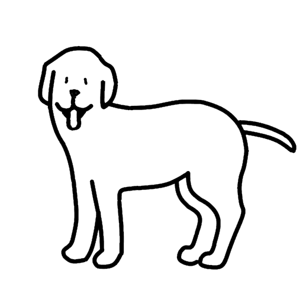

かならずお読みください→
ーいぬがでてきてワンとなくおもちゃのたのしいつくりかたー
アニメーションを動かしましょう
タイトルが紛らわしくてすみません。ここはいぬのおもちゃの作り方を説明しているサイトです。生き物としての犬は出てきません。 いぬのおもちゃについては、障害をもつこどもたちのためのおもちゃ ９、 １０、 １１ をご覧ください。
いぬのおもちゃはタブレットやスマホ、パソコンであそぶおもちゃです。一見するとゲームのようにも見えますが、ホームページの一種です。
最近インターネットでできる〇〇とかインストールしなくても使えるオフィスソフトなどが目立ってきました。皆さんのなかにもすでにご存じの方も少なくないと思います。じつはこれらはWebアプリといわれるウェブ技術（ホームページの技術）の応用の一種です。 従来のアプリとホームページとは確かに別のものでしたが、ここ数年間にその中間分野の開発が進み両方の機能を併せ持った表現ができるようになってきています。 いぬのおもちゃもホームページの作り方を参考にして作りました。そこにはたくさんの狙いがあります。
まず使う人にとって最大のメリットは利用開始まで必要な知識も時間も手間もそして費用も少なくなり節約できるところです。 さらに作り手にとって最大のメリットは配布や流通のコストがほとんどゼロになるところです。 これらは福祉用具の開発や普及について考える時、これまでいつも頭の痛い問題でした。それがいま軽減、解決、解消の方向に進み始めています。
インターネットで閲覧しているページをウェブページ、いくつかのウェブページの集団をウェブサイトと呼ぶそうです。しかし今のところこれらを特に区別せずに『ホームページ』と呼ぶのが一般的なようです。このページでは厳密な違いが必要なときは別として、特にこれの言葉を区別せず使っています。
この文章をお読みの方は、パソコン方面が得意な人から苦手な人までいろいろだと思います。また話題がこどもたちのためのおもちゃのつくりかたですので、いつもより苦手な人が多いかもしれません。しかしできるだけ多くのひとたちに読んでいただくために、基礎的、基本的なところから始めたいと思います。
せっかく興味や関心があるのに、途中でわからなくなって諦めてしまっては実にもったいないです。資源や食料だって人材だってもったいないし使い捨てはよくないと思います。 そこでどのあたりでわからなくなったか、そして次はどんな準備をして何を強化すればいいか自分でわかっていただくために、はじめはゆっくりとそして徐々にスピードを上げていきたいと思います。
一方、『はやいとこ話をはじめろ』という方は適宜早送りで先に進んでください。
それから、パソコンはWindowsをお使いの方がmacをお使いのかたよりも多いようですので、Windowsをメインに話を進めます。macの方はすみません、ご容赦ください。 またタブレットやスマホでこの文をお読みの方は、読むだけなら特に問題ありませんが、途中にあれこれ実技がありますのでどうぞパソコンをご用意ください。たしかにタブレットやスマホは便利ですが、今回のように不向きな用途もあります。以上よろしくお願いします。
では始めましょう。
手始めに、デスクトップで右クリック＞新規作成＞テキストドキュメントをクリックしてください。 デスクトップに「新しいテキストドキュメント.txt」ができます。 もしここで「新しいテキストドキュメント」ができて.txtがついていない場合はお使いのパソコンがファイル名の拡張子が非表示になっています。これではこの先不便も多いですのでまずファイル名拡張子を表示するように設定を変更してください。 もしこのやり方がわからないなら「ファイル名拡張子の表示」で検索してください。たくさんヒットします。まあ先頭の記事を読んでください。もっと知りたかったら二番目以降をお読みください。できましたか？ このさき話をすすめるなかで、いろいろとわからない言葉が出てくると思います。そんなときはこのように、検索して調べてください。わからないことをわからないままにしておくと困ったことになるのは、みなさん経験があると思います。
これから大人になる若い人たちは、教室での授業や書物での勉強のように吸収する勉強のほかに、このような自分で考え自分に合わせて必要なものを積み上げていく勉強法を身につけてほしいと思います。この方法は自分の得意分野をますます伸ばすことができます。
新しいテキストドキュメント.txtのファイル名をindex.htmlに変更します。 やり方はいくつかありますが、アイコンをクリックして選択し、F2キーを押し入力モードにし、index.htmlとキー入力してください。 アイコンを右クリックし名前の変更でもいいです。 ここで『拡張子を変更するとファイルが使えなくなる可能性があります。変更しますか？』と表示されますが、はい、を選びます。 ここでアイコンのデザインが変わりました。このアイコンをダブルクリックするとブラウザ（EdgeとかChromeとかFirefoxなどのインターネット閲覧ソフト）が立ち上がり、真っ白な表示がでます。このファイルは中身の空っぽなホームページのもとですので、真っ白で正常です。
次にwindowsメモ帳（スタートボタン＞windowsアクセサリー＞メモ帳）でデスクトップのindex.htmlを開きます。 テキストエディタをお使いになる方はそちらでもかまいません。 そして下の1-12行すべてをコピペ（コピー、ペースト（貼り付け）略してコピペです）して保存します。
<!DOCTYPE html> <html> <head>簡単なホームページ </head> <body>今日の天気は？
今日の天気は晴れ
富山の天気予報はここ </body> </html>
ここでindex.htmlのアイコンをダブルクリックすると、下のように表示されます。
かなり質素ですが、ごくシンプルなホームページに見えます。 今コピペしたものが、このページの中身なのです。
再びメモ帳でindex.htmlを開いてください。 そして「晴れ」を「快晴」に書く変えてください。保存して、 ブラウザをリロード再読込（丸い矢印をクリック）してください。リロードすると変更したところが変わります。今、更新したのです。このように修正と確認を繰り返してホームページを作りあげていきます。
文章のほか、フォントや色を決めたり変更したり、写真を入れたり変えたりするのもhtmlファイルに専用のことばで書き込んでいきます。「html フォント」などと検索するとやり方がわかります。いろいろ覚えるといろいろできるようになります。しかしやりすぎると派手になります。htmlの勉強をすると次々と試してみたくなりますので誰もが一度はこんなことを経験します。 また、「html 学習」と検索すると、初心者から応用レベルまで多くの情報を得ることができます。
このようにhtmlはワープロのように見た目を整えてくれますが、やはり記事の内容や文の良さや写真などのデザインは自分だけが頼りです。
これは余談です。最近、見た目のきれいな写真やイラストを配置した内容がいまいちなページをあちこちでみかけるようになりました。どこかの〇〇学校か□□教室で、同じような学習をした人々が、同じような仕事について低単価で締め切りに追われて大量生産をやっているのではないかと想像してしまいます。本当のところはどうなのでしょう？ でもそんないまいちのものでも世の中に出せるところがウェブのいいところでもあり悪いところでもあるのです。
この方法を使えば、必要なものを必要な人に届ける仕事はずいぶん実現に近づきます。あとは一番肝心な必要なものを作ることです。しかしこちらの方がパソコンよりずっとむつかしい仕事です。そうですパソコンは単に手段です。自動車や電話と同じ道具です。目的ではありません。
さて、この要領でどんどん改善を重ねた結果、ついにホームページは完成します。作ったindex.htmlはデスクトップにあり、そして当然あなたは自由に閲覧できます。しかしこれでは他の人はそのページを閲覧できません。そこでこのindex.htmlをサーバという名前の、『大きなコンピュータ』に送りこむと、 https://www.toyama-reha.or.jp/ といったURL（ホームページのアドレス）をつかってそれこそ世界中から閲覧できるようになります。またようやくここでスマホやタブレットからも閲覧できるようになります。 パソコンでは内部に保存されたhtmlファイルを表示できますがスマホやタブレットでは内部に保存されたhtmlファイルを表示できません。ただインターネット上のhtmlファイルは表示できるというのがその理由です。見るのはいいのですが作るのは苦手です。
このサーバへのアップロード作業は、ftpソフトを使うやり方のほかブラウザでサーバに接続してアップロードするやり方もあるようで、主に使用するサーバの事情によって決まります。サーバ選びはこの他にも料金などの条件も総合して決めますので、アップロードの方法についてはその際に調べてください。
かんたんに説明しましたが、世界中のwebサイトは基本的にはこのようなやり方で作られています。いまお読みになっているこのページも同じです。
ホームページはパソコンやスマホやタブレットで閲覧できます。カメラ付きの場合は下の様なQRコードを使うととても簡単でしかも使いこなせる人はかなり多いようです。
このように、既に多くの人たちがやり方を知っていて、もう道具も持っていて日常的に使っています。 その結果最近では、やり方がわからないとか、道具がないとかいう話は少なくなって来ました。
さて次はしろいいぬのおもちゃをみなさんにもつくってもらいます。 ここまでの説明はよろしいでしょうか。もしここまでの説明がいまいちすっきりと『ガッテン』できていないようでしたら、もう一度戻って話をたどりなおすことをお勧めします。 ここまでのことばの意味や概念を十分理解し基礎知識も勉強し、作業も円滑にすすめるようにならないままでさらに先に進んでもますますわけがわからなくなるでしょう。
ここまで一緒に勉強してきた仲間とはなれ、自分ひとりで戻るのはつらいことですが、 しっかりやり直しをやらないところに、いろいろな問題の原因があると思っています。 ここから坂道が急になりますので体力が不十分ですとへこたれます。
さて次に進みます。作業２の要領で、次のようなindex.htmlを作成してください。
<!DOCTYPE html>
<html lang="ja">
<head>
WebToy DOG
</head>
<body>
 </body>
</html>
</body>
</html>
簡単に説明します。
1行目 htmlのバージョン5の定型文
2行目 日本語を使用する際の定型文
3-17行はこのページの設定
4行 漢字ひらがななど東アジアの文字を使用
5行 タイトルはWebToy DOG
6行 javascript.jsというJavaScriptファイルを読み込む
8-16 表示範囲の設定 縁はなし タッチパネル操作を無効化（無意識にさわって拡大縮小するのを防ぐため ピンチでのzoomはできない） class1という名前をつけたら中央表示
18-22 表示内容 .dog1gifという名前の画像ファイルにimage_dog というIDをつけて、class1（中央表示と上で設定した）で表示
このindex.htmlを起動すると、画像ファイルdog1.gifが画面上辺に中央表示されます。またこの画像はgifアニメーションなのでうごきます。index.htmlではここまでの仕事をします。
また同じ要領で、次のようなjavascript.jsファイルを作成してください。これはページの動きを記述したプログラムになります。言語はJavaScriptを使っています。
console.log("Hello WhiteDog!");
let countup = 0;
// Main
window.onload = function(){
// Mouse
var isMouseDown;
document.addEventListener("mouseup", handleMouseUp, true);
document.addEventListener("mousedown", handleMouseDown, true);
function handleMouseDown(e){
isMouseDown = true;
handleMouseMove(e);
document.addEventListener("mousemove", handleMouseMove, true);
document.addEventListener("touchmove", handleMouseMove, true);
console.log("MouseDown");
var elemdog = document.getElementById("image_dog");
elemdog.src = "./dog2.gif";
audioElem = new Audio();
audioElem.src = "./doga.mp3";
audioElem.play();
}
function handleMouseUp(){
document.removeEventListener("mousemove", handleMouseMove, true);
document.removeEventListener("touchmove", handleMouseMove, true);
console.log("MouseUp");
var elemdog = document.getElementById("image_dog");
elemdog.src = "./dog1.gif";
countup++;
console.log(countup);
if(countup > 10){
countup =0;
var elemdog = document.getElementById("image_dog");
elemdog.src = "./dog3.gif";
setTimeout(function(){
console.log("舌をだしました")
elemdog.src = "./dog1.gif";
},1000);
}
isMouseDown = false;
}
function handleMouseMove(e){
var clientX, clientY;
if(e.clientX){
clientX = e.clientX; clientY = e.clientY;
}else if(e.changedTouches && e.changedTouches.length > 0){
var touch = e.changedTouches[e.changedTouches.length - 1];
clientX = touch.clientX; clientY = touch.clientY;
}else{
return;
}
};
};
こちらも簡単に説明します。
1行目 コンソールにHello WhiteDog!と表します。javascript.jsの読み込みミスがあると表示しませんので正常読込の確認
2行目 回数カウントの変数を宣言
4行目 ファイルの読み込み後自動的にこれが動く
6行目 変数isMouseDownを宣言していますがほとんど使っていない
7,8行 下記で使用するhandleMouseUpとhandleMouseDownの有効化
10-21行 クリック押下されたときの処理を記述
12行目で43行目のhandleMouseMoveをうごかして
13,14行目でhandleMouseMoveの有効化
15行 押下されたことをコンソールに表示し
16,17行 しっぽをふっている画像を、しっぽを振り上げている画像に切り替え
18-20行 ワンと吠える音声ファイルを再生
23-41行 マウスボタンをはなしたときの動作を記述
27,28行 handleMouseMoveを停止して
26行 MouseUpをコンソールに表示し
27-28行 犬の画像を元にもどし
29行 カウンタを１増やして
30行 コンソールカウンタ表示
31-39行 カウンタが10を超えたら0にもどし、舌を出した画像（このページのトップ画像）を1秒間表示して元にもどす
この説明文は、まるでEテレのピタゴラスイッチみたいですね。こうやって見るとあの番組はこども向け？ソフトウエア教育の一翼を担っているのがわかります。
このjavascript.jsをindex.htmlと同じフォルダに保存し、更に以下のファイルをダウンロードして同じフォルダに保存します。
doga.mp3 犬のなきごえの音声ファイル
dog1.gif 犬がしっぽをふっているgifアニメ画像ファイル
dog2.gif 犬がしっぽを振り上げ、口を開いている画像ファイル
dog3.gif 犬が舌を出している画像ファイル（このページのトップ画像）
ここでindex.htmlをダブルクリックすると、白い犬がしっぽを振って現れます。 みなさんもしろいいぬを作れました。
index.htmlから、javascript.jsを読み込ませます。その後、尻尾を降っている犬のgifアニメを表示します。
javascript.jsの読み込みが終了すると、自動的に動作を開始します。
マウスボタンの押し下げと離し（タッチパネルのタッチと離し）を見張り始めます。
マウスが押されると画像を切り替え、ワンという犬のなきごえの音声ファイルを再生します。
マウスを離したときは、元の画像に切り替えます。この切り替えを11回繰り返すと、舌を出した画像を1秒間表示したあとで元の画像にもどします。
そして、50-60行目は今回は全く使用していません。このhandleMouseMoveという部分はマウスカーソルの位置（タッチパネルをタッチした位置）を計測する機能があります。この部分を動かすと、一秒間におよそ数十回座標値を求めることができます。位置だけでなく速度も方向もわかると思います。既に公開しました、頭をなでると甘えるいぬはこれを使っています。またこのおもちゃであそんでいる最中のこれらのデータを使えば、手指運動の評価やもしかしたら空間無視の評価にも使えるのではないかと思っています。
また時々いぬが舌をだすのにも理由があります。これに気がつくならまず視力や注意力もそれなりにあることがわかります。そしてなにか変わったことが起きると誰かに伝えたくなります。つまりコミュニケーションのモチベーションが上がるのも期待できます。
このような仕組み（アルゴリズム）でこのおもちゃはうごいています。 ですので、しろいいぬの代わりに黒いいぬの画像を使用すれば、黒いいぬが吠えます。 白い猫の画像を用意して、ねこの鳴き声の音声ファイルを用いると、猫が鳴きます このように次々と異なるキャラクタをほぼ無限に登場させることができます。
またプログラムを変更して新しいストーリーを追加すると、さらに多種多様なおもちゃを作り出すことができます。
このようなやり方にはいくつかのメリットがあります。 まず、前回の冒頭におはなししたように年少の人たちのようにすぐ飽きてしまっても次から次へと目新しいおもちゃをだせますのでもうこれで大丈夫でしょう。 考えてもみてください。 毎年いくらか手直したよく似た戦隊が出てくるこども番組をご存じですか。 またご高齢の男性がお供を連れて超軽装で全国を旅をする時代劇はご存じですか。 飽きない工夫はこんなところにもあるのです。
またこのやり方では、お使いになる方の事情や好みに合わせたおもちゃをつくることができます。ちょっと速すぎる、ちょっと小さすぎる、ちょっと難しすぎるといったことは現場ではありがちです。このおもちゃでは、時々いぬが舌を1秒間出しますが、38行目の1000を2000にすれば、2秒間舌を出すようになります。1500ならもうわかりますね。
またタブレットやスマホを使えば、いつでもどこでも使うことができます。 また同じような事情と需要のあるほかの方々にお裾分けができます。 「いつか困った時は助けてね」と言えるといいですね。
さらに、現在の日本では、工学部などプログラミングやパソコンに慣れた理系学部の卒業生、高専、短大、専門学校の卒業生は年に20-30万人社会に出ているはずです。Windowsが出てから約30年たちましたので、およそ1000万人近くになるでしょう。さらに文系出身者で情報系の仕事をしている人も少なくありません。 そうなると患者さんの親御さん、こどもさんなど同居家族に詳しい人がいる確率はそれほど低くありません。おじさんおばさん、甥御さん姪御さん、いとこまでいれるとこの確率はかなり高くなります。さらに近所のおにいさんがLANを設定してくれたなどの話もあります。さらに中高生も意外にできたりしますのでまんざらでもありません。 このページをお読みになっている方の半分くらいはできるのではないでしょうか。
このページの実習がうまくいった方は、上のリストの4に相当します。インターネットには数多くのサンプルがあります。「JavaScript やりたいこと サンプル」で検索するとみつかります。他の人のプログラムはいろいろと勉強になります。まずは見てまねするから始めるのがいいと思います。
ちなみに私は今2のあたりです。今回のプログラムは、『しめじのネタ帳』さんを参考にさせてもらいました。大変勉強になりました。どうもありがとうございます。 この様な事情ですので、私の作ったものも、どなたでもコピーしたり、改造したり、流用したり、再配布したり自由にしていただいてかまいません。
2022/04/08 公開
研究企画課リハ工学科にもどる
←もくじはこちらです{kind=link}
{kind=link}
{kind=link}